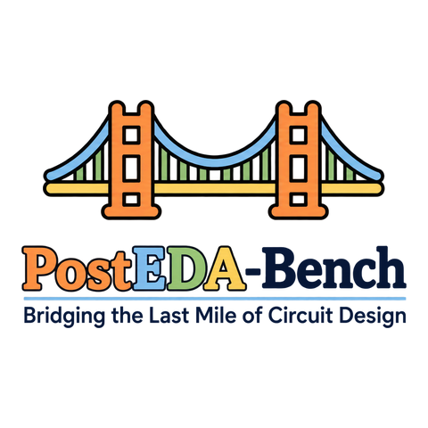
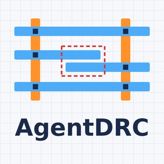

Research
I'm interested in AI agents for electronic design automation (EDA), self-improving agents, and world models and predictive representation learning (e.g., JEPA).
Most of my research so far applies LLMs and LLM agents to chip design, from Verilog code generation to design rule checking (DRC) repair and power, performance, and area (PPA) optimization.
* denotes equal contribution.
|
|

|
Bridging the Last Mile of Circuit Design: PostEDA-Bench, a Hierarchical Benchmark for PPA Convergence and DRC Fixing
Pengju Liu,
Nuo Xu,
Jinwei Tang,
Yu Cao,
Caiwen Ding
Under review, 2026
arXiv
/
code
A hierarchical benchmark of 145 tasks for evaluating LLM agents on design rule checking (DRC) repair and power, performance, and area (PPA) optimization.
Evaluating eight LLMs across agent frameworks shows that geometric reasoning and PPA trade-offs are the key challenges, and that adding vision improves DRC repair.
|
|

|
AgentDRC: Multi-Agent Algorithms for Spatially-Aware Automated DRC Correction
Pengju Liu,
Nuo Xu,
Winson Chen,
Peijun Li,
Yang (Katie) Zhao,
Yu Cao,
Caiwen Ding
Under review, 2026
Multi-agent algorithms that reason over layout geometry to automatically correct design rule checking (DRC) violations.
|
|
|
HaVen: Hallucination-Mitigated LLM for Verilog Code Generation Aligned with HDL Engineers
Yiyao Yang*,
Fu Teng*,
Pengju Liu*,
Mengnan Qi,
Chenyang Lv,
Ji Li,
Xuhong Zhang,
Zhezhi He
Design, Automation & Test in Europe (DATE), 2025
arXiv
/
code
A framework that mitigates symbolic, knowledge, and logical hallucinations in LLM-generated Verilog through chain-of-thought reasoning and targeted data augmentation, aligning the generated code with HDL engineering practice and improving functional correctness on VerilogEval and RTLLM.
|
|
Education
|
Ph.D. in Computer Science, University of Minnesota Twin Cities, 2025 – present
Master's degree, Electronic and Computer Engineering, HKUST, 2023 – 2024
Bachelor's degree in Microelectronics, UESTC, 2019 – 2023
|
|
Experience
|
Research Assistant, Shanghai Jiao Tong University, 2024 – 2025
|
|
Honors
|
DAC Young Fellowship, 2026
|
|
Teaching
|
Teaching Assistant, CSCI 4061: Introduction to Operating Systems, University of Minnesota Twin Cities, Fall 2026
|
|